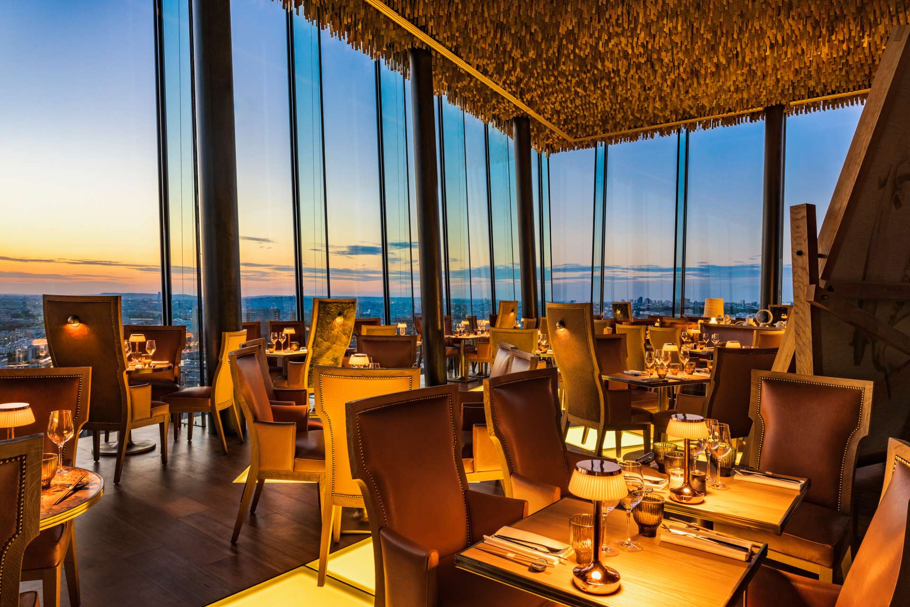

Notre histoire

Le Délice est un restaurant spécialisé dans la cuisine traditionnelle tunisienne. Nous proposons des plats préparés avec des ingrédients frais et de qualité.
Notre mission
Notre objectif est de satisfaire nos clients en proposant une cuisine délicieuse, un service rapide et un accueil chaleureux.
Pourquoi nous choisir ?
- Des ingrédients frais.
- Des plats traditionnels.
- Un personnel accueillant.
- Un excellent rapport qualité-prix.